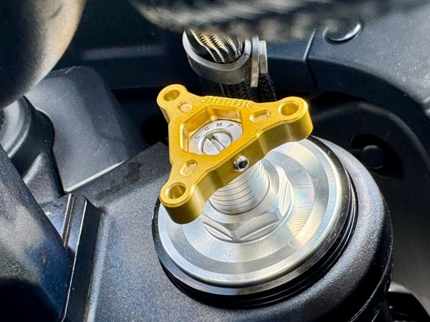

Serwis
Przegląd i odświeżenie amortyzatorów, widelców i wkładów cartridge.
- demontaż i weryfikacja zużycia elementów
- wymiana uszczelnień, tulejek i oleju o dobranej lepkości
- odpowietrzanie próżniowe
- test na hamowni przed i po serwisie
Od rutynowego serwisu po kompletne zawieszenie wyścigowe. Pracujemy z motocyklami sportowymi, turystycznymi, ADV, supermoto, klasykami i custom.
Przegląd i odświeżenie amortyzatorów, widelców i wkładów cartridge.
Setup dopasowany do kierowcy i tego, jak naprawdę jeździsz.
Poprawiamy seryjne komponenty tam, gdzie producent poszedł na kompromis.
Zawieszenia w specyfikacji torowej i wyścigowej.
Hamownia zawieszeń pokazuje to, czego nie widać gołym okiem.
Współpracujemy z zawodnikami, zespołami i szkołami jazdy.
Opowiedz, na czym jeździsz, gdzie i co Ci przeszkadza w pracy zawieszenia.
Sprawdzamy stan komponentów i mierzymy ich charakterystykę na hamowni.
Przedstawiamy zakres prac i warianty rozwiązań w Twoim budżecie.
Serwis, modyfikacja lub montaż nowych komponentów — z pomiarem końcowym.
Ustawiamy zawieszenie w motocyklu pod Ciebie i Twój styl jazdy.

Dobrze działające zawieszenie to przede wszystkim bezpieczeństwo i komfort. Poprawiamy prowadzenie motocykli turystycznych, adventure i miejskich — często w rozsądnym budżecie, bez wymiany wszystkiego na nowe.
Wycena ustalana jest indywidualnie po diagnozie — zależy od modelu motocykla, stanu komponentów i zakresu prac.
Olszynowa 1b, 05-092 Łomianki · pon.–pt. 18:00–21:00, sob. 11:00–18:00